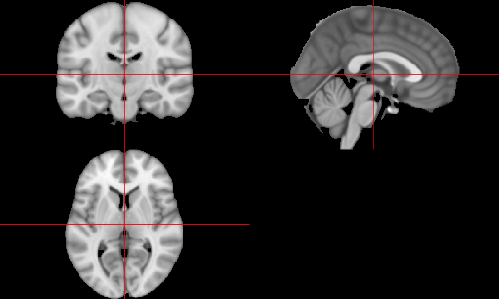

July 15, 2016
Problem: Images are 3D: Brain Example
We want to explore results

Solution: Interactive exploring
Let's make it interactive!
- What is the value added?
- Is it necessary?
- How could I first incorporate it in a static way (e.g. journals)
- When that fails go interactive
Many times it's to display results.
First Attempt: Use manipulate
The manipulate package (Allaire 2014) from RStudio can add interactivity, BUT:
- Images rendering was slow (due to my plotting function)
- Only works with RStudio
- Can't be embedded
Next Attempt: Port (i.e. Steal) another program
Lessons Learned
- Use other people's stuff
- Porting to R can help a communithy
- not always so straightforward
- Functionality at the whim of the maintainer
- not std R
- htmlwidgets is great
- not always super easy for a user to cram into
Bibliography
Allaire, JJ. 2014. Manipulate: Interactive Plots for RStudio. https://CRAN.R-project.org/package=manipulate.